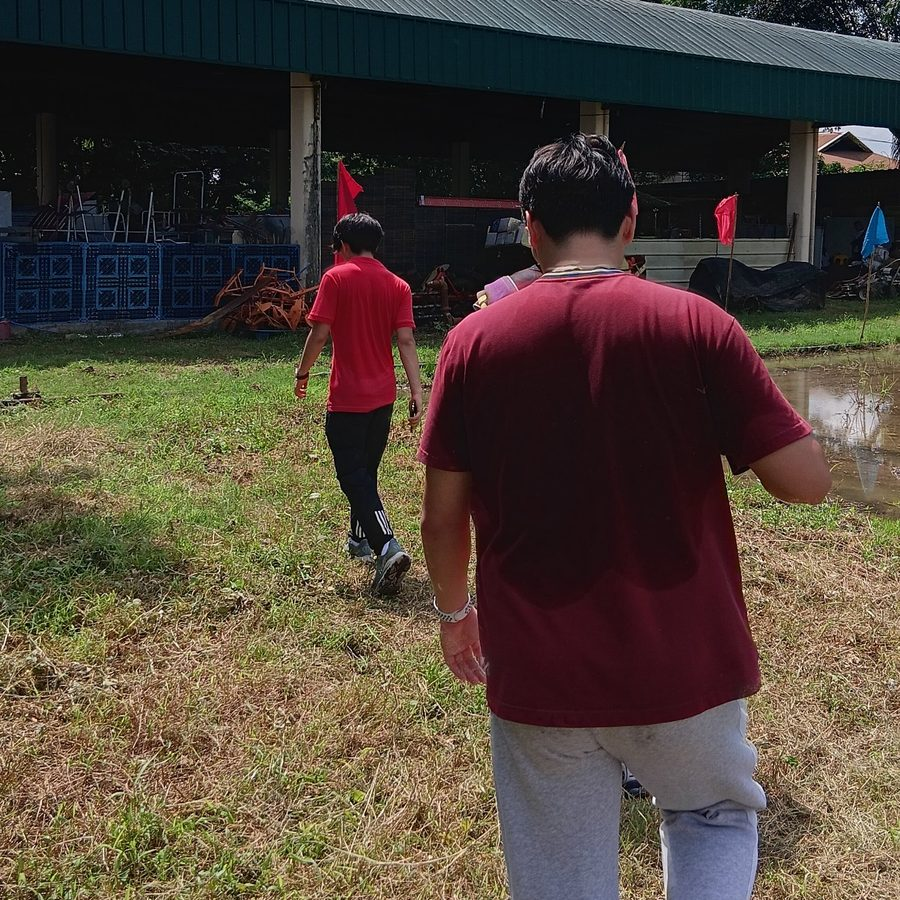
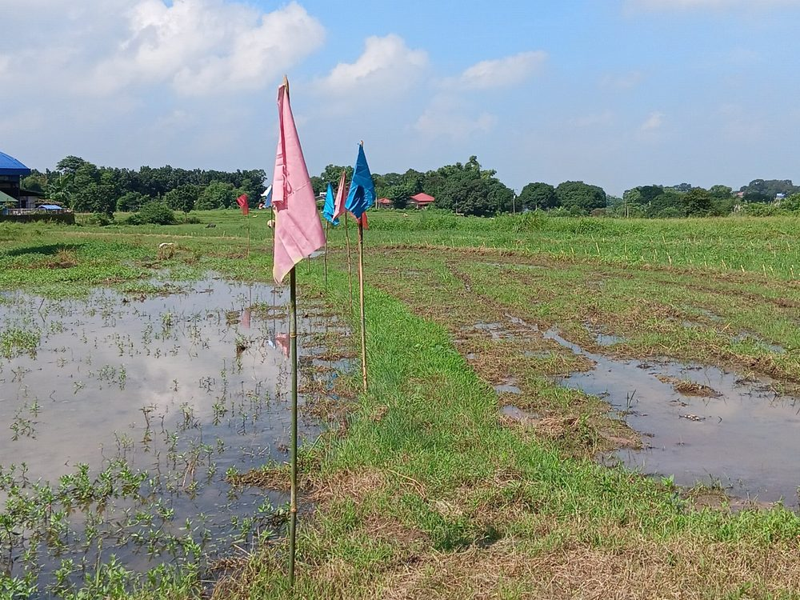
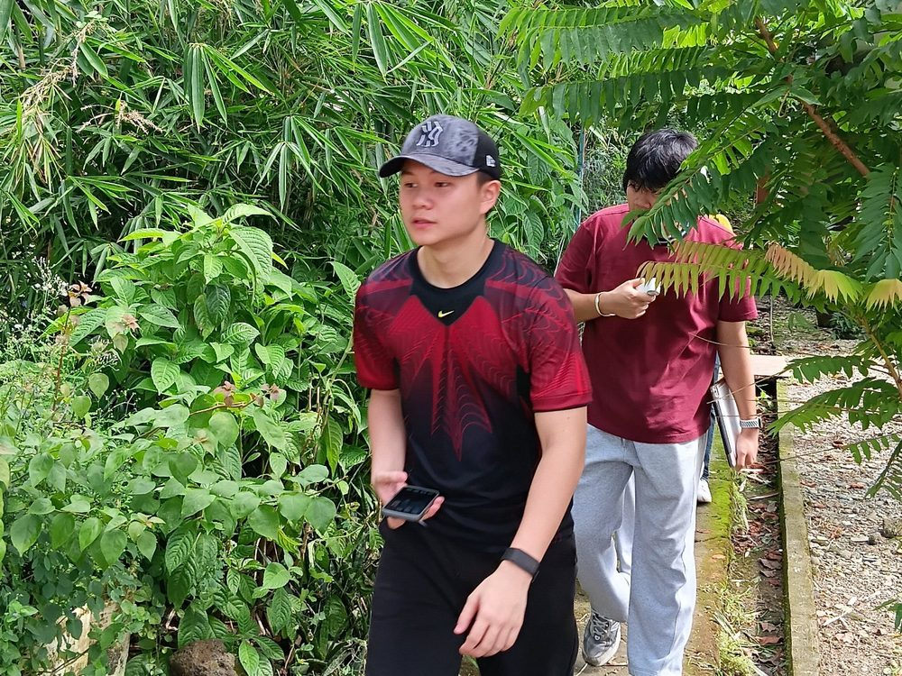
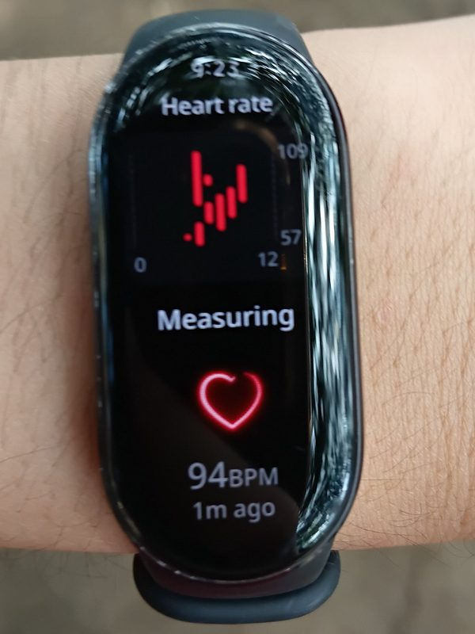
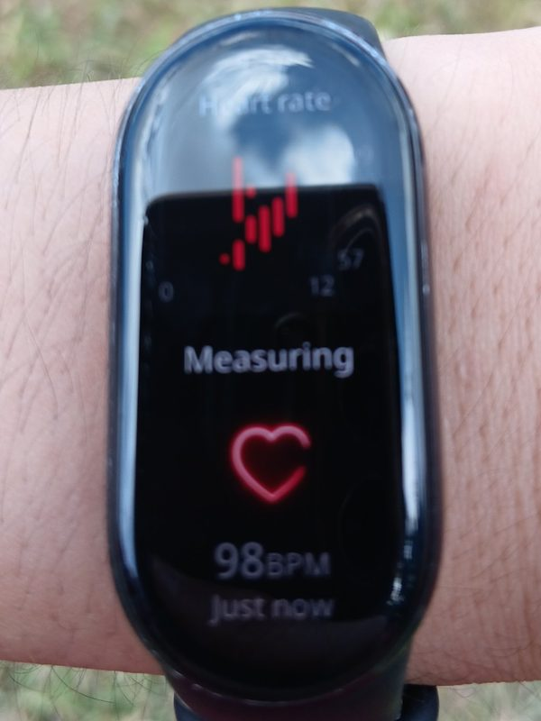
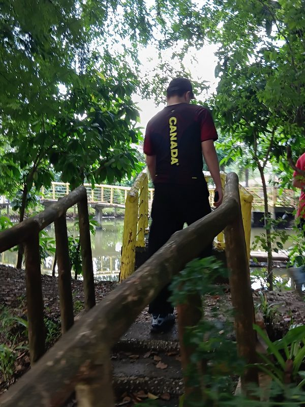

The effects of rests when hiking
By Lance Dy Chua, Royce Dizon, Kenji Chua, Rajon Ng, Isham Dy, and Paulo Pua
November 24 2026

Does a 1-minute rest affect your heart rate while hiking?
We hiked 1 km on two trails twice, once without any rest and once with a 1 minute rest every 200 m. For each trial, we measured our HR every 200 m before and after the rests. We observed no significant difference on the Duran Farm, a light farm trail. On the other hand, it tended to decrease the heart rate on the more challenging Biak-na-Bato trail, though this was not statistically significant.
+1.0 bpmwith interval rests on Duran Farm
−5.0 bpmwith interval rests on the Biak-na-Bato trail
Introduction
It is not directly obvious whether stopping makes a hike easier on the heart overall, since the heart rate may rise back to its original shortly after the rest. Our research question asks the effects of a 1-minute rest every 200 m compared to hiking without stopping. By using two different trails, we can see how the difficulty of the trail may affect the difference between rest and no rest.


Method
In order to compare the hikes fairly, we used the average of the readings taken while moving (200 m to 1000 m), without including the heart rate directly after the rest.
For each subject, the heart rate was read from the same fitness tracker at:
- The resting heart rate
- Directly before the hike
- At every 200 m mark
- After each rest
This was repeated twice on both trails and results were recorded on a phone. To analyze the data, we used a t-test.
Results
Resting made no difference on the farm and tended to lower heart rate on Biak-na-Bato (Table 1). The effect of resting differed between the trails by 6.0 bpm (p = 0.02).
No difference was observed on the farm but resting slightly lowered the average heart rate on Biak-na-Bato, by 5.0 bpm. This was not statistically significant (p = 0.21).
| Trail | No rest | Rest | Effect of resting |
|---|---|---|---|
| Duran Farm | 106.7 | 107.7 | +1.0 (p = 0.76) |
| Biak-na-Bato | 115.3 | 110.3 | −5.0 (p = 0.21) |
| Difference between trails (Biak − farm) | +8.6 (p = 0.005) | +2.6 (p = 0.43) | −6.0 (p = 0.02) |
● No rest ● Rest
In Figure 2, both lines on Duran Farm closely follow each other for the whole 1000 m . On Biak-na-Bato, both lines are close at 200 m, however the no-rest line continued to increase up to 125 bpm by 400m while the rest line stayed ~18bpm lower. Eventually, both lines met at around the same spot at 800 m and 1000 m.
On Biak-na-Bato, resting lowered the heart rate more than on Duran Farm for all subjects (Table A1). Each 1-minute rest dropped heart rate by about 22 bpm on Duran Farm and 25 bpm on Biak-na-Bato, however it climbs back close to the heart rate before the rest by the next reading.
Discussion
On Duran Farm, the drop in heart rate caused by each rest immediately rose back up within the next 200 m, which meant that resting simply added time with no affect on the average heart rate. On Biak-na-Bato, the no-rest hike spiked while the rest hike stayed lower through the challenging part of the trail.
We noticed that resting seems to matter once the difficulty is enough for the heart rate to climb fast. For a challenging hike, a rest can be useful on the climbs with minimal effect on flat ground. We were unable to measure slope and elevation directly, and this observation is based on the perceived difficulty of the hike rather than an exact elevation reading.
On both trails we tested, the heart rate stayed moderate as expected. The highest single reading was 145 bpm, which is only ~71% of the estimated maximum for a 17 year old (220 - age) [1], within the 64–76% range usually called moderate intensity [3].
Limitations
Given the small sample size of five subjects, the results in this experiment are certainly not definitive. Only the difference between trails and the larger effect of resting on Biak-na-Bato reached p < 0.05.
We also noticed that rest hikes on the farm started about 6 bpm lower than no-rest hikes, which may suggest that the order of the hikes affected the results. It is also noted that wrist sensors are not as accurate on inclines, especially while moving, and relying on a single reading can be noisy. We were also unable to control the hiking speed and only relied on the distance measured on the watch.
Conclusion
Resting every 200 m made no difference on the easier Duran Farm trail, but tended to keep heart rate about 5 bpm lower on the harder Biak-na-Bato trail, although this was not statistically significant. A future experiment should test longer hikes and steeper trails, with more subjects, quantitative measurements of elevation gain, and controlled walking speed.
References
[1] Robergs, R. A., & Landwehr, R. (2002). The surprising history of the "HRmax=220-age" equation. Journal of Exercise Physiology online, 5(2). http://www.asep.org/asep/asep/Robergs2.pdf
[2] Tanaka, H., Monahan, K. D., & Seals, D. R. (2001). Age-predicted maximal heart rate revisited. Journal of the American College of Cardiology, 37(1), 153–156. https://pubmed.ncbi.nlm.nih.gov/11153730/
[3] Harvard Health Publishing. (2023, June 1). All about your heart rate. https://www.health.harvard.edu/heart-health/all-about-your-heart-rate
[4] Holtz, Y. (n.d.). Customizing line charts with Pandas. The Python Graph Gallery. https://python-graph-gallery.com/531-customizing-linecharts-with-pandas/
Data and evidence



| Subject | Resting | Farm, no rest | Farm, rest | Biak, no rest | Biak, rest |
|---|---|---|---|---|---|
| 1 | 72 | 122.6 | 121.6 | 131.0 | 120.6 |
| 2 | 63 | 91.0 | 92.0 | 102.2 | 102.2 |
| 3 | 67 | 105.0 | 115.6 | 112.0 | 113.6 |
| 4 | 70 | 122.2 | 113.8 | 126.0 | 110.4 |
| 5 | 62 | 92.6 | 95.4 | 105.4 | 104.6 |